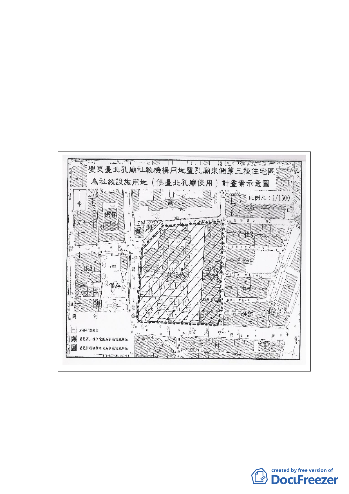

情形，報請 公鑑。
案情概要說明：
一、本件係市府以 92 年 10 月 28 日府都二字第 09224797503
號函送到會，並自 92 年 10 月 29 日起公開展覽三十天。
二、法令依據：都市計畫法第二十七條第一項第四款。
三、說明會日期：92 年 11 月 13 日
公民或團體陳情案件：計六十四件
四、計畫案示意圖：
五、計畫內容：
（一）變更「社教機構用地」（13,404 ㎡）及「第三種住宅區」
（4,989 ㎡）為「社教設施用地」（18,393 ㎡）。
（二）建蔽率 40％、容積率 225％。
-2-